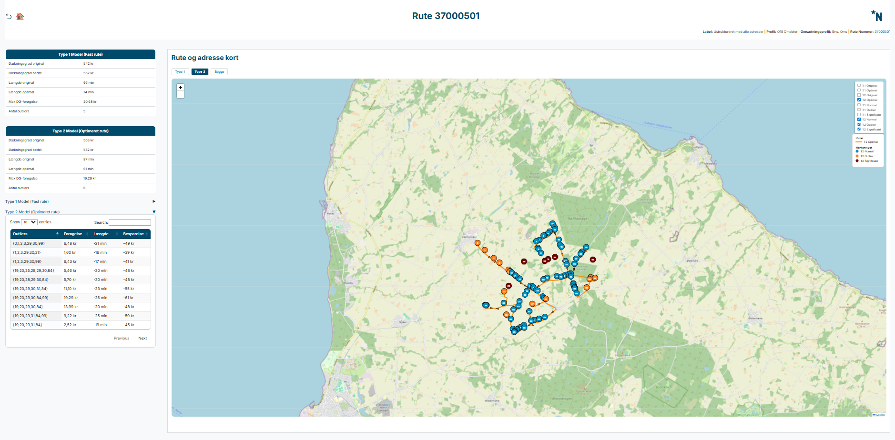
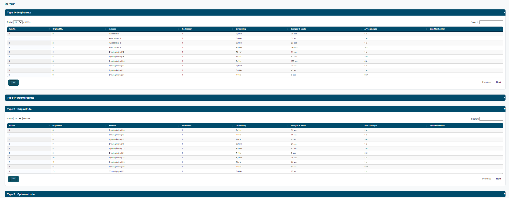

How to use it
- Start with the KPI tables.
- Read the outlier table next.
- Use the map to check the geography.
- Finish with the stop tables.
This is the most detailed view. It shows one route and compares the original and optimized versions.
These are the main terms used on the route page.


| Route no. | The position in the shown order. |
|---|---|
| Original no. | The position in the original order. |
| Address | The stop address. |
| Revenue | The value contributed by the stop. |
| Length to next | Distance or time to the next stop. |
| APR x length | The cost of the segment to the next stop. |
| Significant outlier | Marks whether the stop is a clear issue. |